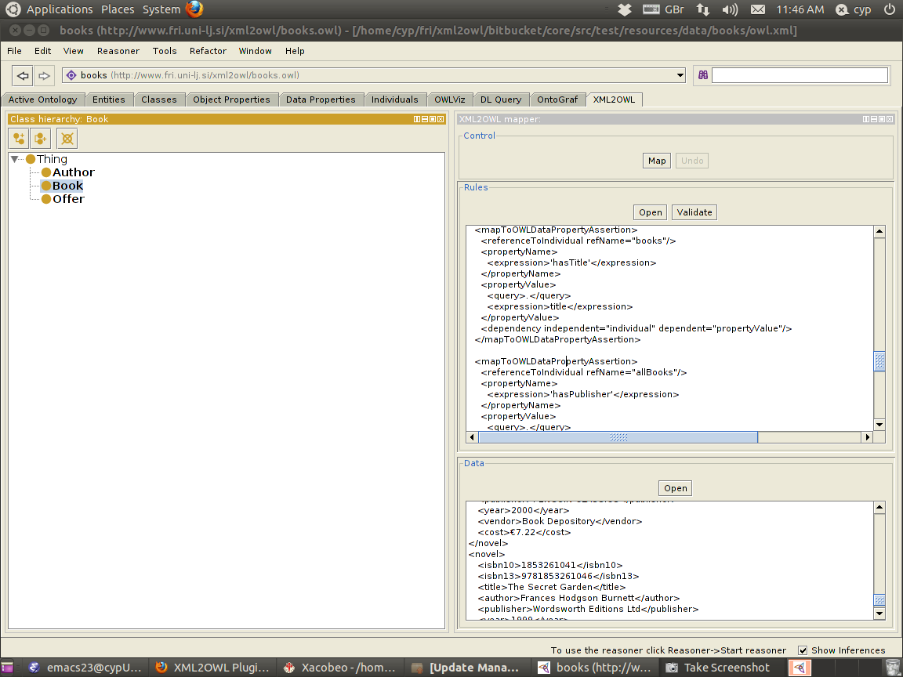

REFER TO MAIN DOCUMENTATION APPROPRIATELY
WRITE THIS

The contents of a rules file are pasted into the Rules textarea. They can be typed or pasted manually, or the Open button can be used to insert the contents of a file from the filesystem. The rules file can then be validated against the XML2OWL rules schema with the Validate button (this is not necessary, however, as it happens anyway as the first step in mapping). The contents of a data file are pasted into the Data textarea in exactly the same way as for the rules. The Control area has two buttons. When the Map button is clicked, the mapping program applies the rules to the data and adds the resulting new individuals and assertions to the OWL ontology. The last mapping can be undone by clicking on the Undo button.